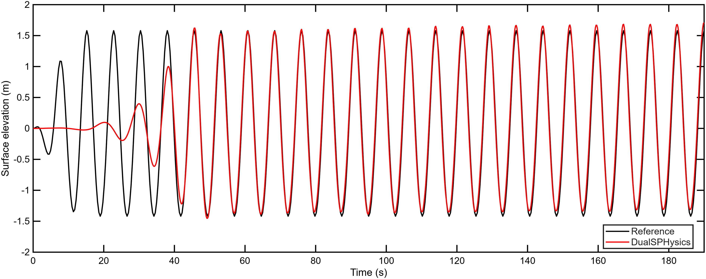

Wave Generation¶
Under review by Bonaventura Tagliafierro
This example demonstrates wave generation using a piston-type wavemaker with second-order correction. Regular waves are generated in a numerical wave flume with a passive damping zone towards its far end. The Biesel transfer function relates the wave height to the piston stroke, and the prescribed piston motion includes the second-order term described by Madsen (1971).
The benchmark is supplied at DualSPHysics_v6.0/examples/benchmarks/03_WaveGeneration. Its comparison target is numerical free-surface elevation against theoretical regular-wave elevation at approximately two wavelengths from the wavemaker. The XML and BAT are provisional until the release configuration is frozen. Numerical/reference results are available below; final scientific verification remains pending. There is no external experimental dataset for this case.
What's Covered in This Tutorial
This case demonstrates the following DualSPHysics capabilities:
- Second-order piston-type wave generation
- Moving boundaries and geometry-based normals for mDBC
- Passive wave absorption using a damping zone
- Particle VTK output and numerical free-surface extraction
- Direct theoretical elevation output through
savemotion
Video: To be updated for the approved benchmark configuration.
All XML blocks below are excerpts from WaveGeneration_Def.xml. They retain the source expressions, attributes and comments. Separate excerpts are not a complete runnable case definition.
Case Configuration¶
Physical Setup¶
The simulation represents a 2-D wave flume in the \(x\)–\(z\) plane, with particles generated only at \(y=0\):
| Quantity | Configured or derived value |
|---|---|
| Still-water depth \(d\) | 40 m |
| Wave height \(H\) | 3 m |
| Wave period \(T\) | 7.60 s |
| Gravity | \((0,0,-9.81)\) m/s² |
| Reference fluid density | 998 kg/m³ |
| Duration | \(25T=190\) s |
| Numerical output interval | \(T/40=0.19\) s |
| Particle spacing | \(dp=40/133\approx0.3007518797\) m, derived from the XML expressions |
| Wavelength \(L\) | Approximately 89.526363 m, calculated from the configured depth, period and gravity |
The still-water surface is at \(z=0\), the nominal bottom at \(z=-40\) m and positive \(x\) points from the piston towards the far wall. The nominal piston reference is at \(x\approx-179.163834\) m; the far wall is at \(x\approx143.242181\) m. Their nominal separation is approximately 322.406015 m. These values describe the configured geometry, not measured or generated particle data.
Local boundary label mkbound=10 identifies the moving piston. Both the tank bottom and the right wall use mkbound=0; water uses mkfluid=0. These local labels are not particle counts or assumed generated marker values.
Geometry Definition¶
Domain Setup¶
The complete predefinition excerpt defines the physical dimensions, particle-grid placement and output times:
<predefinition>
<newvarcte depth="40.0" _rem="Water level" />
<newvarcte wavePeriod="7.60" waveH="3.00" _rem="Wave parameters: Period and Wave height" />
<newvarcte regularWaves="25" />
<newvarcte timeMax="regularWaves*wavePeriod" />
<newvarcte timeOut="wavePeriod/40" />
<!-- Dp definition -->
<newvar Dp="waveH/10" />
<setvar Dp="depth/floor(depth/(Dp)+0.5)" />
<newvarcte Dpm="Dp/2" />
<newvarcte wavelength="wavelength(9.81,depth,wavePeriod)" />
<newvarcte domainUp="0.1*wavelength" />
<newvarcte domainBeach="domainUp+1.5*wavelength" _rem="Right wall of the tank" />
<newvarcte pistonPosition="domainBeach-floor((domainBeach+2.0*wavelength)/Dp+0.5)*Dp" />
<newvarcte domainDown="pistonPosition-4*waveH" />
<newvarcte tankTop="3*waveH" _rem="Top of the tank walls above SWL" />
<newvarcte domainWidthY="1.00" />
<newvar alpha="10*8.96e-7*998/(998*1.3*sqrt(2.0)*Dp)" />
<newvarcte PminX="pistonPosition-Dpm-(floor((pistonPosition-domainDown)/Dp+0.5)+1)*Dp" />
<newvarcte PminY="0" PminZ="-depth-Dpm-10*Dp" />
<newvarcte PmaxX="domainBeach+Dpm+10*Dp" PmaxY="0" PmaxZ="20" />
<!-- First layer on the grid at Dp/2 -->
<newvarcte Partpx1="PminX+Dp" Partpx2="domainBeach+Dpm" />
<newvarcte Partpz1="-depth-Dpm" Partpz2="PminZ+floor((tankTop-PminZ)/Dp+0.5)*Dp" />
<newvarcte PartPistonx="pistonPosition-Dpm" />
<newvarcte Tankpy1="-domainWidthY/2" Tankpy2="domainWidthY/2" _rem="2D case: only y=0 is generated" />
</predefinition>
The initial waveH/10 estimate is adjusted by depth/floor(depth/(Dp)+0.5), giving \(40/133\) m. Dpm is half this spacing. The original expressions remain the geometry inputs; the decimal values here are explanatory approximations.
<definition dp="#Dp">
<pointref x="#PminX" y="#PminY" z="#PminZ" comment="Origin of the particle grid" />
<pointmin x="#PminX" y="#PminY" z="#PminZ" />
<pointmax x="#PmaxX" y="#PmaxY" z="#PmaxZ" />
</definition>
The equal minimum and maximum \(y\) coordinates select 2-D generation. domainWidthY=1.00 supplies transverse drawing extents; it does not create a finite-width 3-D simulation. The grid origin is explicitly tied to PminX, PminY and PminZ. The geometrical drawing bounds must be distinguished from the solver's particle-based simulation domain:
<simulationdomain comment="Defines domain of simulation (default=Uses minimum and maximum position of the generated particles)">
<posmin x="default" y="default" z="default" comment="e.g.: x=0.5, y=default-1, z=default-10%" />
<posmax x="default" y="default" z="default + 10%" />
</simulationdomain>
The latter retains particle-derived bounds and extends the maximum \(z\) bound by the configured 10%. No generated domain extents or particle counts are assumed.
Piston Wavemaker¶
The piston particle-construction excerpt from geometry/commands/mainlist is:
<setmkbound mk="10" />
<drawbox>
<boxfill>solid</boxfill>
<point x="#PartPistonx-6*Dp" y="#Tankpy1" z="#Partpz1+Dp" />
<endpoint x="#PartPistonx" y="#Tankpy2" z="#Partpz2" />
</drawbox>
<shapeout file="piston" />
boxfill selects a solid particle region, spanning six particle spacings in \(x\). The particle-face reference is PartPistonx=pistonPosition-Dpm, approximately \(-179.314210\) m. This differs by \(dp/2\) from the nominal piston reference used for the wave-coordinate mapping. The geometry for normals uses the nominal face at pistonPosition; the measurement location below is not shifted to the particle-face coordinate.
Tank Bottom and Walls¶
The bottom and right wall share the same boundary label:
<setmkbound mk="0" />
<drawbox>
<boxfill>right|bottom</boxfill>
<point x="#Partpx1" y="#Tankpy1" z="#Partpz1" />
<endpoint x="#Partpx2" y="#Tankpy2" z="#Partpz2" />
<layers vdp="0,1,2,3,4,5" />
</drawbox>
<shapeout file="tank" />
right|bottom selects these two faces, with the specified particle layers 0,1,2,3,4,5. Partpz1 places the first bottom layer half a spacing below the nominal bottom; Partpz2 is aligned with the particle grid near the nominal wall-top height tankTop=3*waveH=9 m above still water. The definitions keep grid-aligned particle surfaces distinct from nominal wall geometry.
Water Volume¶
<setmkfluid mk="0" />
<fillbox x="#pistonPosition+Dpm+5*Dp" y="0" z="#-Dpm-2*Dp">
<modefill>void</modefill>
<point x="#pistonPosition" y="#Tankpy1-10*Dp" z="#-depth" />
<size x="#domainBeach-pistonPosition" y="#domainWidthY+20*Dp" z="#depth" />
</fillbox>
Fluid filling: fillbox uses a seed point inside the intended water region and modefill set to void to fill the available connected space within the specified box. Its nominal vertical extent is from \(z=-40\) m to the still-water surface at \(z=0\), between the piston and the far wall. The seed's \(z=-Dpm-2*Dp\) is inside the water; it does not define the free-surface height.
Boundary Normals¶
The GeometryForNormals list constructs the nominal surfaces separately from the particle layers:
<list name="GeometryForNormals">
<setactive drawpoints="0" drawshapes="1" />
<setshapemode>actual | bound</setshapemode>
<setfrdrawmode auto="false" />
<!-- Tank mk=0 -->
<setmkbound mk="0" />
<setnormalinvert invert="true" />
<drawbox>
<boxfill>right|bottom</boxfill>
<point x="#domainDown" y="#Tankpy1" z="#-depth" />
<endpoint x="#domainBeach" y="#Tankpy2" z="#Partpz2" />
</drawbox>
<setnormalinvert invert="false" />
<!-- Piston mk=10 -->
<setmkbound mk="10" />
<drawbox>
<boxfill>right</boxfill>
<point x="#pistonPosition-12*Dp" y="#Tankpy1" z="#-depth" />
<endpoint x="#pistonPosition" y="#Tankpy2" z="#Partpz2" />
</drawbox>
<shapeout file="hdp" />
<resetdraw />
</list>
The main list calls this list before particle generation, then activates drawpoints="1" and drawshapes="0". The normals configuration uses the resulting geometry:
<normals>
<distanceh value="2.0" comment="Maximum distance (H*distanceh) to compute normals data (default=2)" />
<geometryfile file="[CaseName]_hdp_Actual.vtk" comment="File with boundary geometry (VTK format). Use NONE to ignore it." />
</normals>
distanceh=2.0 sets the maximum distance in smoothing lengths for computing normals. This supports the selected mDBC boundary treatment; it does not establish that GenCase or the solver has already been run.
Motion Configuration¶
Wavemaker Motion Definition¶
Motion setup: objreal ref="10" references the piston boundary; begin activates motion ID 1 at \(t=0\). mvnull serves as a placeholder. The piston displacement is calculated by wavepaddles from the regular-wave parameters below.
Wave Generation Parameters¶
Wavelength and Wave Order¶
The configured wavelength(9.81,depth,wavePeriod) is consistent with the iterative finite-depth calculation in JWaveRegular::CalcWaveLength. The linear dispersion relation used for the wavelength is
For \(g=9.81\) m/s², \(d=40\) m and \(T=7.60\) s, this gives \(L\approx89.526363292\) m. The wavelength calculation and the selected second-order wave formulation are distinct: second-order generation adds the implemented second-harmonic term to the piston displacement, and the theoretical second-order elevation adds its second-harmonic contribution to the first-order elevation. This configuration alone does not demonstrate the absence of unwanted wave components.
For the transfer function and regular-wave background, see Wave Generation.
Piston Wavemaker Configuration¶
The complete wavepaddles excerpt is:
<wavepaddles>
<piston>
<mkbound value="10" comment="Mk-Bound of selected particles" />
<waveorder value="2" comment="Order wave generation 1:1st order, 2:2nd order (def=1)" />
<start value="0" comment="Start time (def=0)" />
<duration value="0" comment="Movement duration, Zero is the end of simulation (def=0)" />
<depth value="#depth" comment="Fluid depth (def=0)" />
<pistondir x="1" y="0" z="0" comment="Movement direction (def=(1,0,0))" />
<waveheight value="#waveH" comment="Wave height" />
<waveperiod value="#wavePeriod" comment="Wave period" />
<phase value="0" comment="Initial wave phase in function of PI (def=0)" />
<ramp value="2" comment="Periods of ramp (def=0)" />
<savemotion periods="30" periodsteps="20" xpos="#abs(pistonPosition)" zpos="#-waveH*2" comment="Saves motion data. xpos and zpos are optional. zpos=-depth of the measuring point" />
</piston>
</wavepaddles>
- Wave characteristics:
depth=#depth,waveheight=#waveHandwaveperiod=#wavePeriodspecify 40 m, 3 m and 7.60 s. - Generation control:
waveorder=2selects second order;start=0begins at simulation start;duration=0continues to the simulation end.pistondir=(1,0,0)sets horizontal piston motion. - Phase:
phase=0is multiplied by \(\pi\) by the XML reader, giving zero initial phase. The elevation uses a cosine phase with a spatial offset; zero phase does not mean that every location starts at equilibrium. - Ramp:
ramp=2is converted to \(2T=15.2\) s. The implemented start-up factor multiplies the piston displacement, theoretical elevation and theoretical velocities during this interval. It reaches unity at the ramp end; it does not prove that numerical propagation transients or reflections have disappeared.
Measurement Position: Global and Piston-Relative Coordinates¶
The BAT samples the numerical surface along the vertical line \(x=0\) m, \(y=0\) m. In savemotion, xpos=#abs(pistonPosition) is the horizontal distance from the nominal wavemaker reference:
This equals approximately \(2.0012410555L\), rather than exactly \(2L\). The small offset follows from the floor(...+0.5) grid-positioning expression. The location is approximately two wavelengths, not two metres, from the piston. Both signals must retain this configured coordinate mapping; no position correction is applied to compensate for the separate particle-face reference.
Theoretical Output from savemotion¶
For the single configured savemotion block and mkbound=10, the implementation establishes the expected file:
WaveGeneration_out/WavePaddle_mkb0010.csv
The theoretical output is available at this path. After configuration metadata, JWavePaddleRegular::SaveMotion writes these data-column headers (shown with semicolons; the actual CSV separator follows the executable's CSV configuration):
Time [s];Position [m];Elevation_o1 [m];Elevation_o2 [m];Velx_o1 [m/s];Velz_o1 [m/s];Velx_o2 [m/s];Velz_o2 [m/s]
| Columns | Meaning in the verified implementation |
|---|---|
Time [s] |
Theoretical output time |
Position [m] |
Piston displacement calculated with the selected second-order motion, including the ramp; a single motion column |
Elevation_o1 [m] |
First-order theoretical free-surface elevation relative to still water at xpos |
Elevation_o2 [m] |
Complete second-order elevation: first-order elevation plus its second-order term, with the ramp applied |
Velx_o1 [m/s], Velz_o1 [m/s] |
First-order horizontal and vertical velocity at xpos,zpos |
Velx_o2 [m/s], Velz_o2 [m/s] |
Complete second-order velocities at the same position |
Elevation_o2 is not an isolated second-order correction. No reconstruction of elevation from piston displacement is required. The output is an analytical/theoretical reference, not an experimental dataset or evidence of numerical agreement.
zpos=#-waveH*2 gives \(z=-6\) m, measured below the still-water level. It is used for velocity evaluation at depth, through the implementation's depth+z dependence. The theoretical free-surface elevation depends on time and horizontal position; zpos is not its sampling height. This velocity ordinate is also distinct from the lower endpoint of the numerical vertical scan.
Passive Wave Absorption¶
Damping Zone Configuration¶
<damping>
<dampingzone>
<limitmin x="#1*domainUp" y="0" z="0" comment="minimum reduction is applied" />
<limitmax x="#domainBeach" y="0" z="0" comment="maximum reduction is applied" />
<overlimit value="0" />
<redumax value="5" comment="Maximum reduction in location limitmax (default=10)" />
</dampingzone>
</damping>
The active passive-damping zone extends from \(x=0.1L\approx8.952636\) m to domainBeach=1.6L, approximately 143.242181 m. Its length is \(1.5L\approx134.289545\) m. redumax=5 sets the maximum reduction at limitmax; overlimit=0 adds no extension beyond that limit. The damping progressively reduces particle velocities towards the far wall to reduce reflected waves.
The numerical measurement used for the comparison is the BAT's MeasureTool scan. No absorption efficiency or reflection coefficient has been established from results.
Numerical Parameters¶
Smoothing Length and Physical Constants¶
<constantsdef>
<gravity x="0" y="0" z="-9.81" comment="Gravitational acceleration" units_comment="m/s^2" />
<rhop0 value="998" comment="Reference density of the fluid" units_comment="kg/m^3" />
<rhopgradient value="3" comment="Initial density gradient 1:Rhop0, 2:Water column, 3:Max. water height (default=2)" />
<hswl value="0" auto="true" comment="Maximum still water level to calculate speedofsound using coefsound" units_comment="metres (m)" />
<gamma value="7" comment="Polytropic constant for water used in the state equation" />
<speedsystem value="0" auto="true" comment="Maximum system speed (by default the dam-break propagation is used)" />
<coefsound value="20" comment="Coefficient to multiply speedsystem" />
<speedsound value="0" auto="true" comment="Speed of sound to use in the simulation (by default speedofsound=coefsound*speedsystem)" />
<coefh value="1.3" comment="Coefficient to calculate the smoothing length (h=coefh*sqrt(3*dp^2) in 3D)" />
<cflnumber value="0.2" comment="Coefficient to multiply dt" />
</constantsdef>
coefh=1.3 sets the smoothing-length coefficient, and cflnumber=0.2 controls the CFL time-step factor. The 3-D formula in the copied coefh comment is a source comment, not a statement that this case is 3-D. rhopgradient=3 selects the maximum-water-height initial density gradient, with reference density 998 kg/m³. Sound-speed settings retain their automatic calculation and coefsound=20.
Boundary Treatment, Kernel and Viscosity¶
<parameter key="Boundary" value="mDBC" comment="Boundary method: DBC, mDBC, MIX:MixBC (default=DBC)" />
<parameter key="SlipMode" value="FS" comment="Slip mode for mDBC: NS:No-slip, FS:Free slip, V0:TanVel=0, M22:mDBC 2022 (default=NS)" />
<parameter key="NoPenetration" value="N" comment="Activate No-Penetration option for mDBC: Y/N (default=N)" />
<parameter key="StepAlgorithm" value="SYM" comment="Step Algorithm: SYM:Symplectic, VER:Verlet (default=SYM)" />
<parameter key="VerletSteps" value="40" comment="Verlet only: Number of steps to apply Euler timestepping (default=40)" />
<parameter key="Kernel" value="WC2" comment="Interaction Kernel: WC2:WendlandC2, WC6:WendlandC6 (default=WC2)" />
<parameter key="ViscoTreatment" value="LAM" comment="Viscosity formulation: LAM:Laminar, ART:Artificial (default=LAM)" />
<parameter key="Visco" value="1e-6" comment="Viscosity value. Typically 0.01 for Artificial and 1e-6 m^2/s (water kinematic viscosity) for Laminar" />
<parameter key="ViscoBoundFactor" value="1" comment="Multiply viscosity value with boundary (default=1)" />
<parameter key="Turbulence" value="NO" comment="Turbulence model: NO:None, SPS:Sub-particle scale (default=NO)" />
The case explicitly selects mDBC, free-slip (FS) and NoPenetration=N. These are case settings, not a claim about the built-in default of every executable. SYM selects symplectic integration; the present VerletSteps=40 applies only to Verlet and is not the active integrator setting. The kernel is Wendland C2 (WC2).
ViscoTreatment=LAM with Visco=1e-6 specifies laminar kinematic viscosity of \(10^{-6}\) m²/s; ViscoBoundFactor=1 retains its boundary multiplier, and Turbulence=NO selects no separate turbulence model. The alpha expression in predefinition does not select artificial viscosity: the execution parameters govern the active viscosity treatment.
Density Diffusion, Divergence Cleaning and Shifting¶
<parameter key="DensityDT" value="FO" comment="Density Diffusion Term: NO:None, FO:Fourtakas (default=NO)" />
<parameter key="DensityDTvalue" value="0.10" comment="DDT value (default=0.1)" />
<parameter key="DivCleanKp" value="#CoefSound" comment="Kappa parameter for Divergence Cleaning (equal to coefsound) (default=0)" />
<parameter key="Shifting" value="4" comment="Shifting mode 0:None, 1:Ignore bound, 2:Ignore fixed, 3:Full, 4:Full advanced (default=0)" />
<parameter key="ShiftCoef" value="-2" comment="Coefficient for standard shifting computation (default=-2)" />
<parameter key="ShiftTFS" value="0" comment="Threshold to detect free surface. Typically 1.5 for 2D and 2.75 for 3D (default=0)" />
<parameter key="ShiftAdvCoef" value="-0.01" comment="Coefficient for advanced shifting computation (default=-0.01)" />
<parameter key="ShiftAdvALE" value="N" comment="ALE formulation for advanced shifting: Y/N (default=N)" />
<parameter key="ShiftAdvNCPress" value="Y" comment="Non conservative pressure formulation for advanced shifting: Y/N (default=N)" />
DensityDT=FO selects Fourtakas density diffusion with coefficient 0.10; see Fourtakas et al. (2019). DivCleanKp=#CoefSound supplies the divergence-cleaning coefficient from the case's sound-speed coefficient. The solver enables cleaning for positive DivCleanKp and uses it to scale the local pressure/density-based cleaning speed. It is not an elevation-gauge parameter.
Shifting=4 selects full advanced shifting, configured by ShiftAdvCoef=-0.01, ShiftAdvALE=N and ShiftAdvNCPress=Y: ALE corrective terms are disabled and the non-conservative pressure formulation is enabled. The standard-shifting values ShiftCoef=-2 and ShiftTFS=0 are present, but the solver reads them for standard modes 1–3, not the selected advanced mode. Commented-out XML alternatives are not active settings. Rigid-body and floating-body options in the general parameter list do not introduce a floating object into this piston-and-fixed-tank case.
Simulation Duration¶
<parameter key="TimeMax" value="#timeMax" comment="Time of simulation" units_comment="seconds" />
<parameter key="TimeOut" value="#timeOut" comment="Time out data" units_comment="seconds" />
<parameter key="TimeOutExtra" value="0.05" />
The configured numerical duration is \(25T=190\) s, with regular PART output every \(T/40=0.19\) s. TimeOutExtra=0.05 is retained separately; it must not be substituted for the regular PART interval. The time step itself is adaptive: DtIni=#2*Dp/1500, CoefDtMin=0.001, DtMin=0, DtFixed=0 and DtFixedFile=NONE retain the configured initial/minimum-step rules without a fixed-step schedule.
Running the Simulation¶
Windows GPU¶
The currently supplied script is wWaveGeneration_win64_GPU.bat. Run it from the benchmark directory when execution is authorised. Its relevant definitions are:
set dirbin=../../../bin/windows
set gencase="%dirbin%/GenCase_win64.exe"
set dualsphysicscpu="%dirbin%/DualSPHysics6.0CPU_win64.exe"
set dualsphysicsgpu="%dirbin%/DualSPHysics6.0_win64.exe"
The active GenCase and GPU solver calls, with their actual error checks, are:
rem Executes GenCase to create initial files for simulation.
%gencase% %name%_Def %dirout%/%name% -save:all
if not "%ERRORLEVEL%" == "0" goto fail
rem Executes DualSPHysics to run the SPH simulation.
%dualsphysicsgpu% -gpu %dirout%/%name% %dirout%
if not "%ERRORLEVEL%" == "0" goto fail
The active particle post-processing calls are:
rem Executes PartVTK to create VTK files with fluid particles.
set dirout2=%dirout%\particles
%partvtk% -dirdata %diroutdata% -savevtk %dirout2%/PartFluid -onlytype:-all,+fluid -continue:1
if not "%ERRORLEVEL%" == "0" goto fail
rem Executes PartVTKOut to create VTK files with excluded particles.
%partvtkout% -dirdata %diroutdata% -savevtk %dirout2%/PartFluidOut -SaveResume %dirout2%/_ResumeFluidOut
if not "%ERRORLEVEL%" == "0" goto fail
PartVTK selects fluid particles using -onlytype:-all,+fluid and retains the script's -continue:1. PartVTKOut exports excluded particles separately and requests their summary via -SaveResume. These paths distinguish the ordinary fluid VTK output from excluded-particle diagnostics.
The free-surface extraction is a separate MeasureTool call:
rem Executes MeasureTool to export the selected measurements to CSV files.
set dirout2=%dirout%\measure
%measuretool% -dirdata %diroutdata% -pointsdef:ptls[x=0.0:0:1,y=0:0:1,z=-6.00:0.01:1200] -onlytype:-all,+fluid -elevation:0.4 -savecsv %dirout2%/WaveGauge
if not "%ERRORLEVEL%" == "0" goto fail
The ptls definition specifies one \(x\) coordinate, one \(y\) coordinate and 1,200 vertical samples, starting at \(z=-6.00\) m with 0.01 m spacing. The final requested sample is \(z=5.99\) m. It is a vertical scan at \(x=y=0\), not a point measurement at \(z=-6\) m. -elevation:0.4 requests elevation extraction with the explicitly selected threshold coefficient 0.4; this case-specific option is retained as supplied.
The active sequence is GenCase → GPU solver → PartVTK → PartVTKOut → MeasureTool → IsoSurface. Every active call has a return-code check. The final active IsoSurface call requests 2-D slices. The older optional combined surface/slice template and its explicit plane definitions remain commented out; they are not arguments of the active call.
The final active surface-export block in wWaveGeneration_win64_GPU.bat is:
rem Executes IsoSurface to create VTK files with fluid surfaces or slices.
set dirout2=%dirout%\surface
%isosurface% -dirdata %diroutdata% -saveslice %dirout2%/Slices
if not "%ERRORLEVEL%" == "0" goto fail
It reads %diroutdata% (WaveGeneration_out/data) and writes the surface/Slices prefix under the same case output directory. The return-code check precedes :success; static inspection does not establish successful execution.
Expected Output Organisation¶
| Path relative to the benchmark directory | Purpose |
|---|---|
WaveGeneration_out/ |
Case-generation files, solver diagnostics and wave-paddle theoretical output |
WaveGeneration_out/data/ |
Solver particle data read by the post-processors |
WaveGeneration_out/particles/PartFluid |
PartVTK fluid-output prefix |
WaveGeneration_out/particles/PartFluidOut |
Excluded-particle VTK prefix |
WaveGeneration_out/particles/_ResumeFluidOut |
Excluded-particle summary prefix |
WaveGeneration_out/measure/WaveGauge |
CSV output location requested by MeasureTool |
WaveGeneration_out/WavePaddle_mkb0010.csv |
Theoretical piston motion, elevation and velocity |
Numerical output is available under WaveGeneration_out/. The current BAT requests the measure/WaveGauge prefix. Generated metadata agrees with free-slip mDBC, laminar viscosity without SPS, advanced shifting and 190 s duration; the PNG-to-run provenance remains unverified. Static command inspection does not establish successful completion.
Final Release Scripts¶
The release plan includes Windows GPU and CPU BAT files and Linux GPU and CPU SH files. Only the currently supplied Windows GPU BAT is verified for this case. Final names and contents of the remaining scripts will be reviewed after the source configuration is frozen; no unverified platform commands are prescribed here.
Results and Analysis¶
Visual Results¶

The available PNG labels its curves Reference and DualSPHysics. Final verification must associate the plotted reference with the configured theoretical output and confirm the numerical measurement, datum and time origins. Elevation_o2 supplies the complete second-order theoretical elevation; Elevation_o1 is a separate first-order reference. Neither theoretical column is itself a numerical result.
Wavemaker Motion¶
The theoretical CSV provides a single Position [m] column for the selected second-order piston displacement. It does not contain separate first- and second-order displacement histories. This prescribed-motion output must be distinguished from a numerical free-surface elevation history extracted from particle results.
Wave Profile Analysis¶
Compare MeasureTool's elevation at global \(x=y=0\) with Elevation_o2 at the configured piston-relative xpos. Both elevations use the still-water datum \(z=0\); the numerical CSV's actual columns and units must first be checked.
| Time series | Configured spacing | Time extent relevant to comparison |
|---|---|---|
| Numerical regular PART output | \(T/40=0.19\) s | Simulation \(0\le t\le190\) s |
Theoretical savemotion rows |
\(T/20=0.38\) s | Requested \(30T=228\) s; elevation/velocity are limited as described below |
Important time-limit behaviour: the current implementation writes the requested theoretical rows through 228 s, but sets TimeEnd=190 s before saving them. CalcElevation and CalcVelocity return zero after TimeEnd. The theoretical elevation/velocity tail after 190 s is therefore not a continuation of the wave prediction. The displacement calculation has a separate time condition and must not be used to infer the elevation tail.
Use only the common interval 0–190 s, respecting actual available sample times. The nominal theoretical spacing is twice the numerical output spacing, so matching times can be selected after checking both files. Do not assume interpolation, shift a signal, or extend the comparison into the zero-filled theoretical tail. The theoretical ramp is included during the first 15.2 s; numerical wave propagation and start-up response still require assessment. No arbitrary transient cutoff or fitted phase adjustment is selected here.
Damping Zone Effectiveness¶
Passive damping is configured beyond the numerical measurement location, but reflected-wave contamination and absorption performance remain to be assessed from actual results. No agreement, convergence, accuracy or percentage absorption claim is made.
Advanced Modifications¶
Irregular-wave generation is described in Wave Generation. This walkthrough uses the supplied regular piston case. Changing that choice requires a separately reviewed case definition and comparison target.
References¶
◆ Madsen, O. S. (1971). On the generation of long waves. Journal of Geophysical Research, 76(36), 8672-8683. https://doi.org/10.1029/JC076i036p08672
◆ Fourtakas, G., Domínguez, J. M., Vacondio, R., & Rogers, B. D. (2019). Local Uniform Stencil (LUST) boundary condition for arbitrary 3-D boundaries in parallel smoothed particle hydrodynamics (SPH) models. Computers & Fluids, 190, 346–361. https://doi.org/10.1016/j.compfluid.2019.06.009